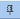
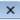
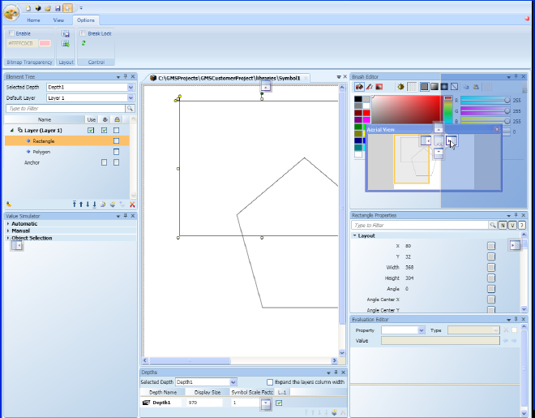

Arranging Views and Dock Panel Placement
The dock panel is the area below the Ribbon that allows you to display and configure how to display your working views in the Graphics Editor.
Auto-Hide Views
You can use the auto-hide feature to slide a view in and out of sight. This allows more space in the dock panel for the views you are actively working in.
- The view is displayed in the dock panel below the ribbon.
- From the view title bar, select Auto-hide

. - The view slides into the nearest edge of the Graphics Editor and displays a tab with the view’s name.
- When you want to display the hidden view, hover over the view’s tab with your mouse.
- The view is fully visible in the dock panel and the auto-hide icon is enabled . When you move the mouse outside of the view area, the view slides back into the auto-hide position.
- To undo the auto-hide feature, so that the view is always visible in the dock panel, click Auto-Hide .
- The view is now docked in the dock panel, the auto-hide is disabled, and Auto-Hide displays.
Display and Close Views
You can decide which views to display in the dock panel frame of the Graphics Editor.
- On the View tab, in the Display Views group, select the check box next to the views you want open in the dock panel. If a view checkbox is not selected, it will not display in the dock panel.
- The selected views display in the dock panel frame.
NOTE: By default, the Find and Replace view is set to float and does not automatically dock when checked. - To close a view, click

Close.
- The view is removed from the dock panel frame and unchecked in the Display Views group.
Dock a View
All views displayed in the dock panel are by default set to Dockable. This means you can click, drag, and reposition a view. When you move the view around the dock panel, available docking anchors display, allowing you to determine where to dock your view.

NOTE:
The Find and Replace view and the Page Setup pane are not dockable by default.
- The view is displayed in the dock panel below the ribbon.
- If the view is not already in the dockable state, right-click the view’s title bar and from the menu that displays on right-click, select Dockable.
- Click the title bar of the view panel and start to drag the panel.
- When you drag the view panel, the available position anchors display.
- Hover over the anchor position where you want to display the view panel.
- A blue-shaded area displays showing you the target position for that position anchor.
- Release the mouse button when you have found the appropriate position.
- The view panel docks itself to position of the anchor.
- Example below, docking position anchors are active while moving the view panels around the docking panel. The blue-shaded area represents the target position of the current anchor.

Float a View
A view can be set to float, which means you can click and drag the view panel to any position on your monitors without being confined to the perimeters of the Graphics Editor.
NOTE: You can float a view on an installed client, however, the Web Server and Remote Server clients do not support floating windows.
- The view is displayed in the docking panel.
- Right-click the title bar of the views and from the menu that displays on right-click, select Floating.
- The views panel undocks itself from the docking panel.
- Click the title bar of the view and drag it to the desired location on your monitor’s screen.
Related Topics
For background information, see Views and the Dock Panel.
For workspace overview, see View Tab.